The drive file in matlab of all answers is given below
Simulation filesQuestion and Answer
Question 1:
A Trapezoidal Signal
A trapezoidal signal is described as follows:
x(t) =
t, 0 ≤ t < 2
2, 2 ≤ t ≤ 6
8 − t, 6 < t ≤ 8
0, otherwise
Simulate the following and generate the corresponding plot:
- x(t)
- x(t − 3)
- x(2t)
- x(1/2 t)
- x(2t + 3)
Sample Graph of the answer is given below.
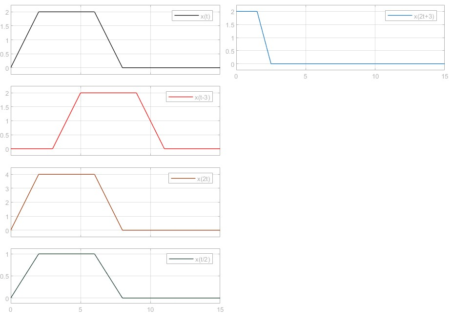The codes used in to generate functions are given below.
a) Code for Matlab Function Block to Generate x(t)
function y = fcn(t)
if t >= 0 && t < 2
y = t;
elseif t >= 2 && t <= 6
y = 2;
elseif t > 6 && t <= 8
y = 8 - t;
else
y = 0;
end
end
b) x(t-3) is generated by connecting a Transport Delay Block with Time Delay of 3.
It included in the simulation file below
c) x(2t) is generated by connecting a Gain Block with gain 2.
d) x(t/2) is generated by connecting a Gain Block with gain 0.5 .
e) Code for Matlab Function Block to Generate x(2t+3)
function y = fcn(t)
t1 = 2 * t + 3;
if t1 >= 0 && t1 < 2
y = (t1 - 3) / 2;
elseif t1 >= 2 && t1 <= 6
y = 2;
elseif t1 > 6 && t1 <= 8
y = 8 - t1;
else
y = 0;
end
end
Download q1(.slx)
Question 2:
Given the following input signal x(t) and impulse response h(t):
x(t) =
1, 0 ≤ t < 3
0, otherwise
h(t) = e-t, t ≥ 0
- Plot the input signal x(t) and the impulse response h(t).
- Perform the convolution of x(t) and h(t) using MATLAB.
- Plot the output signal y(t) obtained after convolution.
- Analyze the system’s behavior based on the convolution result.
a) Function of x(t) and h(t) is given below.
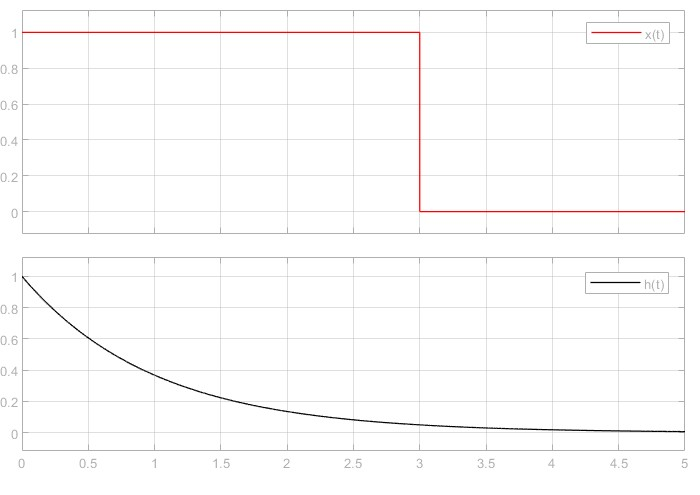The simulink file for x(t) and h(t) is given below.
Download q2a (.slx)c) Code for Convolution of x(t) and h(t) is given below .
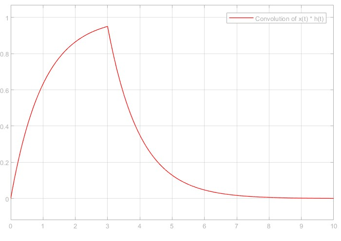 Download Answer 2b (.slx)Question 3:
A system with an impulse response h(t) is defined as follows:
h(t) = e-2t, for t ≥ 0
It is excited by a square wave input:
x(t) =
1, 0 ≤ t < 5
0, otherwise
- Define the input square wave in MATLAB.
- Perform the convolution of x(t) with h(t) to find the output y(t).
- Plot the input, impulse response, and output signals.
- Discuss the system’s response to the square wave.
Answer 3:
a) Code for input square wave is below.
t=0:0.0001:10;
x_t=(t>=0)&(t<5);
figure;
plot(t,x_t,'LineWidth',2);
xlabel('Time (S)');
ylabel('Amplitude');
title('x(t)');
grid on;
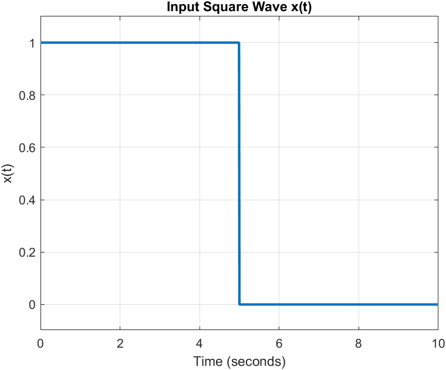
The simulation file for x(t) is given below.
Download q3a (.m)c) Code for convolution of x(t) and h(t) is given below.
function y = analytical_convolution(t)
y = zeros(size(t));
for i = 1:length(t)
if t(i) < 0
y(i) = 0;
elseif t(i) < 5
y(i) = 0.5 * exp(-2 * t(i)) * (exp(2 * t(i)) - 1);
else
y(i) = (1/2) * (exp(10) - 1) * exp(-2 * t(i));
end
end
end
The input and output is given below.
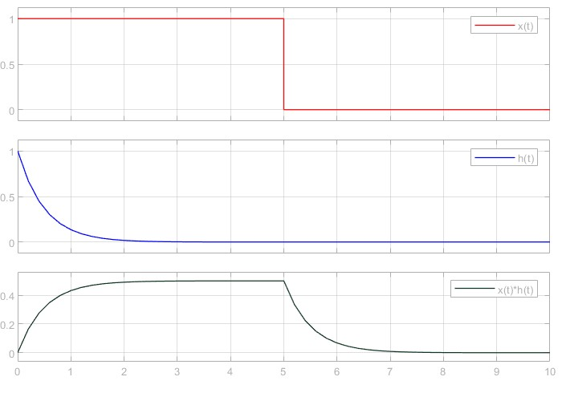The Simulink simulation file for the x(t) and h(t) and its convolution is given below.
Download Answer q3c (.slx)Question 4:
Consider a system with an impulse response h(t) defined as follows:
h(t) = e-t (represents a low-pass filter)
The input signal is a sum of two sinusoids:
x(t) = sin(2πf1t) + sin(2πf2t), where f1 = 1 Hz and f2 = 10 Hz.
- Plot the input signal x(t) for 0 ≤ t ≤ 10 seconds.
- Perform the convolution of x(t) with h(t) in MATLAB.
- Plot the output signal y(t).
- Discuss the effect of the system on the two sinusoidal components (low-pass filtering behavior).
Answer 4:
a) The The graph of x(t) is below.
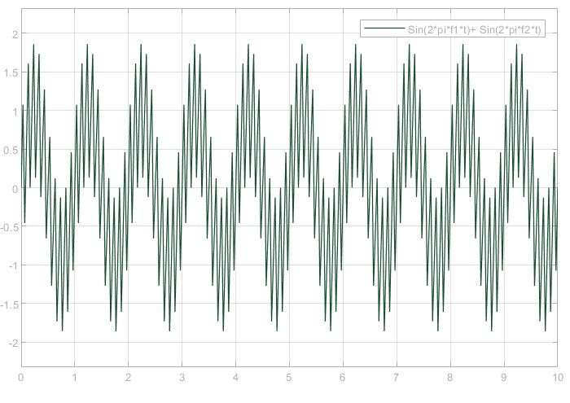The simulated simulink file is given below.
Download Answer q4a (.slx)b) Code for convolution of x(t) and h(t) is ;
t = 0:0.000001:10;
f1 = 1;
f2 = 10;
y1_t = (2 * pi * f1) / ((2 * pi * f1)^2 + 1) * (cos(2 * pi * f1 * t) - exp(-t));
y2_t = (2 * pi * f2) / ((2 * pi * f2)^2 + 1) * (cos(2 * pi * f2 * t) - exp(-t));
y_t = y1_t + y2_t;
plot(t, y_t, 'LineWidth', 1.5);
xlabel('t');
ylabel('y(t)');
title('Plot of y(t)');
grid on;
The simulation file with the same function is given below;
Download Answer q4b (.m)c) Output wavefoem of the convolution is ;
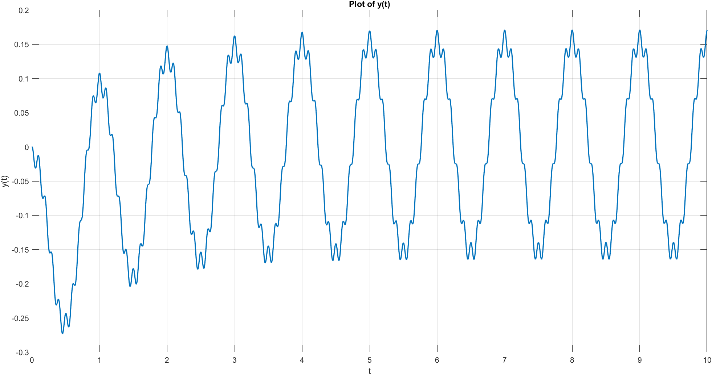Question 5:
Given two arbitrary continuous-time signals:
x(t) = sin(2πt), for 0 ≤ t ≤ 2
h(t) = t, for 0 ≤ t ≤ 1
- Write MATLAB code to define x(t) and h(t) as functions.
- Compute the convolution y(t) = x(t) * h(t) using MATLAB’s conv function.
- Plot the original signals x(t) and h(t), as well as the output y(t).
- Interpret the physical meaning of the convolution in this case.
Answer 5:
a)
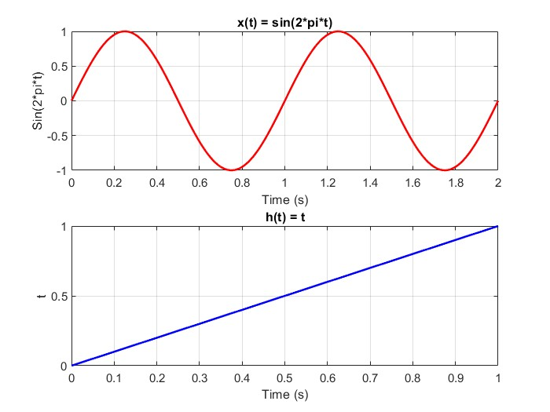The Matlab Simulation file is given below;
Download q5a.mb)
Convolution of x(t) = sin(2πt) and h(t) = t
To find the convolution of x(t) = sin(2π t) for 0 ≤ t ≤ 2 and h(t) = t for 0 ≤ t ≤ 1, we compute:
y(t) = (x * h)(t) = ∫0t x(τ) h(t - τ) dτ
-
For 0 ≤ t ≤ 1:
y(t) = ∫0t sin(2π τ) ⋅ (t - τ) dτ -
For 1 < t ≤ 2:
y(t) = ∫t-11 sin(2π τ) ⋅ (t - τ) dτ -
For 2 < t ≤ 3:
y(t) = ∫t-21 sin(2π τ) ⋅ (t - τ) dτ
Matlab code for finding convolution of x(t) and h(t) is ;
Install Symbolic Math Toolbox
syms t tau;
x_t = sin(2 * pi * tau) * (tau >= 0 & tau < 2);
h_t = tau * (tau >= 0 & tau < 1);
y_t = int(x_t * subs(h_t, tau, t - tau), tau, 0, t);
y_t_func = matlabFunction(y_t, 'Vars', t);
t_vals = linspace(0, 3, 1000);
y_vals = zeros(size(t_vals));
for i = 1:length(t_vals)
t_val = t_vals(i);
if t_val < 1
y_vals(i) = double(int(sin(2 * pi * tau) * tau, tau, 0, t_val));
elseif t_val < 2
y_vals(i) = double(int(sin(2 * pi * tau) * tau, tau, 0, 1));
else
y_vals(i) = double(int(sin(2 * pi * tau) * tau, tau, 0, 1));
end
end
figure;
plot(t_vals, y_vals, 'LineWidth', 2);
xlabel('Time (s)');
ylabel('y(t)');
title('Exact Convolution y(t)');
grid on;
The matlab Simulation file is given below.
Download q5b.mThe output of convolution is given below
This average of the total convolution
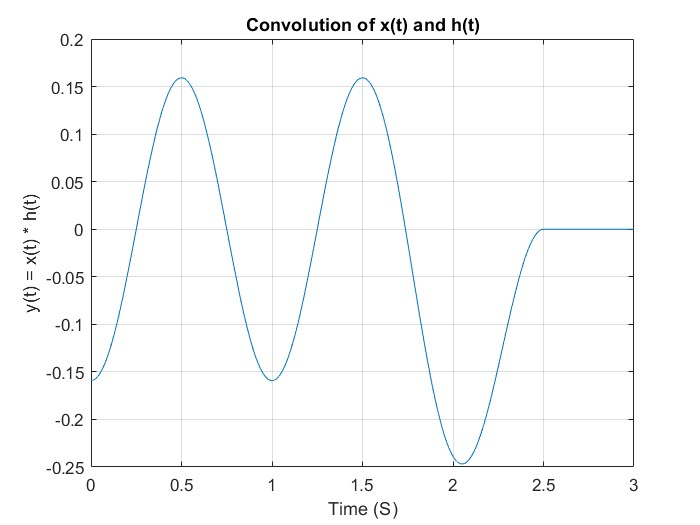The actual system response is given below, which is formed only for the system response is present
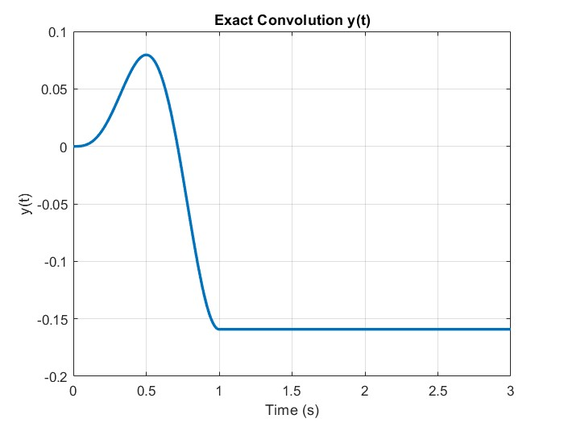c) The code used to show the input x(t) , system response h(t) and output y(t) is given below
syms t tau;
x_t = sin(2 * pi * tau) * (tau >= 0 & tau < 2);
h_t = tau * (tau >= 0 & tau < 1);
y_t = int(x_t * subs(h_t, tau, t - tau), tau, 0, t);
y_t_func = matlabFunction(y_t, 'Vars', t);
x_t_func = matlabFunction(x_t, 'Vars', tau);
h_t_func = matlabFunction(h_t, 'Vars', tau);
t_vals = linspace(0, 3, 1000);
x_vals = arrayfun(@(tau) x_t_func(tau), t_vals);
h_vals = arrayfun(@(tau) h_t_func(tau), t_vals);
y_vals = zeros(size(t_vals));
for i = 1:length(t_vals)
t_val = t_vals(i);
if t_val < 1
y_vals(i) = double(int(sin(2 * pi * tau) * tau, tau, 0, t_val));
elseif t_val < 2
y_vals(i) = double(int(sin(2 * pi * tau) * tau, tau, 0, 1));
else
y_vals(i) = double(int(sin(2 * pi * tau) * tau, tau, 0, 1));
end
end
figure;
subplot(3,1,1);
plot(t_vals, x_vals, 'LineWidth', 2);
xlabel('Time (s)');
ylabel('x(t)');
title('Signal x(t)');
grid on;
subplot(3,1,2);
plot(t_vals, h_vals, 'LineWidth', 2);
xlabel('Time (s)');
ylabel('h(t)');
title('Impulse Response h(t)');
grid on;
subplot(3,1,3);
plot(t_vals, y_vals, 'LineWidth', 2);
xlabel('Time (s)');
ylabel('y(t)');
title('Convolution y(t) = x(t) * h(t)');
grid on;
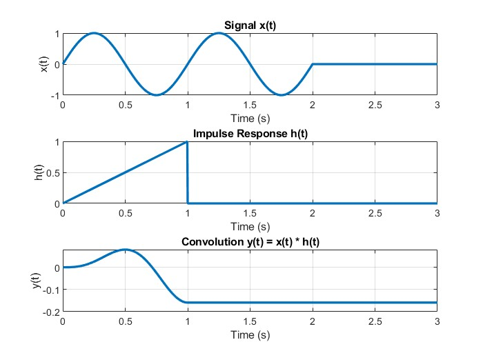
The simulated file is given below;
Download q5c.mQuestion 6:
Consider a system with the following impulse response h(t):
h1(t) = e-t for t ≥ 0
h2(t) = e-2t for t ≥ 0
The input signal is x(t) = sin(2πt) for 0 ≤ t ≤ 5.
(a) Compute the convolution of x(t) with both impulse responses h1(t) and h2(t) in MATLAB.
(b) Plot the output signals for both cases.
(c) Compare and contrast the outputs based on the different impulse responses. Discuss how the change in the impulse response affects the output.
Answer 6:
a,b) For case 1
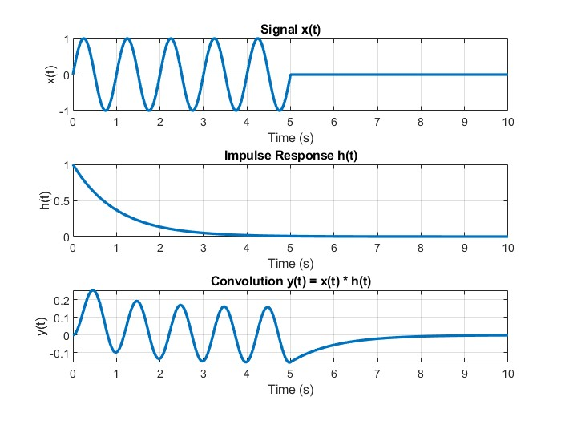The simulated code is given below
syms t tau;
x_t = sin(2 * pi * tau) * (tau >= 0 & tau <= 5);
h_t = exp(-tau);
y_t = int(x_t * subs(h_t, tau, t - tau), tau, 0, t);
y_t_func = matlabFunction(y_t, 'Vars', t);
x_t_func = matlabFunction(x_t, 'Vars', tau);
t_vals = linspace(0, 10, 1000);
x_vals = arrayfun(@(tau) x_t_func(tau), t_vals);
h_vals = exp(-t_vals);
y_vals = zeros(size(t_vals));
for i = 1:length(t_vals)
t_val = t_vals(i);
y_vals(i) = double(y_t_func(t_val));
end
figure;
subplot(3,1,1);
plot(t_vals, x_vals, 'LineWidth', 2);
xlabel('Time (s)');
ylabel('x(t)');
title('Signal x(t)');
grid on;
subplot(3,1,2);
plot(t_vals, h_vals, 'LineWidth', 2);
xlabel('Time (s)');
ylabel('h(t)');
title('Impulse Response h(t)');
grid on;
subplot(3,1,3);
plot(t_vals, y_vals, 'LineWidth', 2);
xlabel('Time (s)');
ylabel('y(t)');
title('Convolution y(t) = x(t) * h(t)');
grid on;
The simulation file
Download Answer q6a.mCase 2
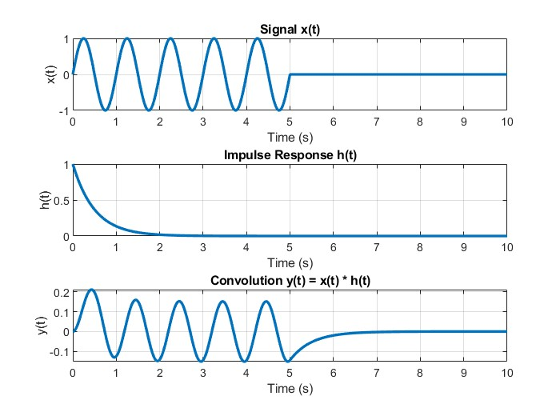
syms t tau;
x_t = sin(2 * pi * tau) * (tau >= 0 & tau <= 5);
h_t = exp(-2*tau);
y_t = int(x_t * subs(h_t, tau, t - tau), tau, 0, t);
y_t_func = matlabFunction(y_t, 'Vars', t);
x_t_func = matlabFunction(x_t, 'Vars', tau);
t_vals = linspace(0, 10, 1000);
x_vals = arrayfun(@(tau) x_t_func(tau), t_vals);
h_vals = exp(-2*t_vals);
y_vals = zeros(size(t_vals));
for i = 1:length(t_vals)
t_val = t_vals(i);
y_vals(i) = double(y_t_func(t_val));
end
figure;
subplot(3,1,1);
plot(t_vals, x_vals, 'LineWidth', 2);
xlabel('Time (s)');
ylabel('x(t)');
title('Signal x(t)');
grid on;
subplot(3,1,2);
plot(t_vals, h_vals, 'LineWidth', 2);
xlabel('Time (s)');
ylabel('h(t)');
title('Impulse Response h(t)');
grid on;
subplot(3,1,3);
plot(t_vals, y_vals, 'LineWidth', 2);
xlabel('Time (s)');
ylabel('y(t)');
title('Convolution y(t) = x(t) * h(t)');
grid on;
The simulation file is given below
Download 6a2 (.slx)Question 7:
A periodic square wave x(t) with period T = 2π is defined as:
x(t) = {
1, 0 ≤ t < π
−1, π ≤ t < 2π
}
(a) Compute the Fourier series coefficients an, bn, and a0 for the square wave.
(b) Plot the square wave and its Fourier series approximation using the first 5, 10, and 20 terms of the series.
(c) Use MATLAB to compute the Fourier series and plot the approximations for the given number of terms.
(d) Discuss the convergence of the Fourier series to the square wave as the number of terms increases.
Answer 2:
a)
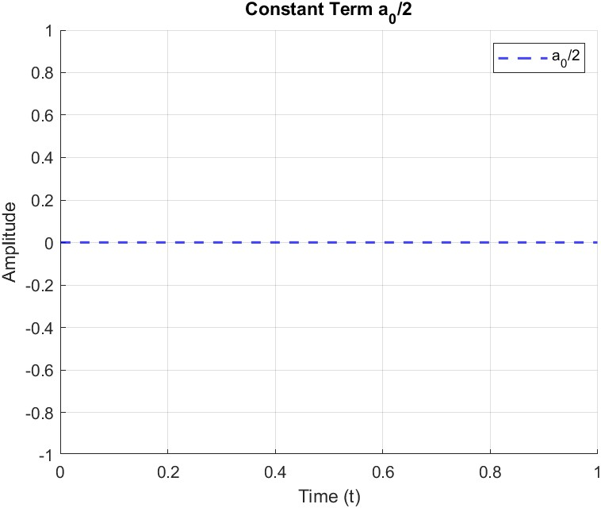 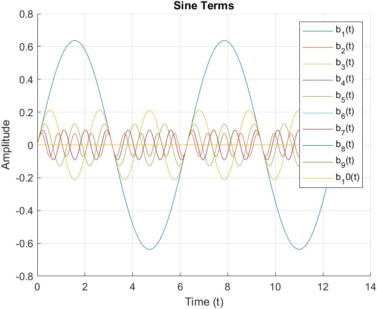 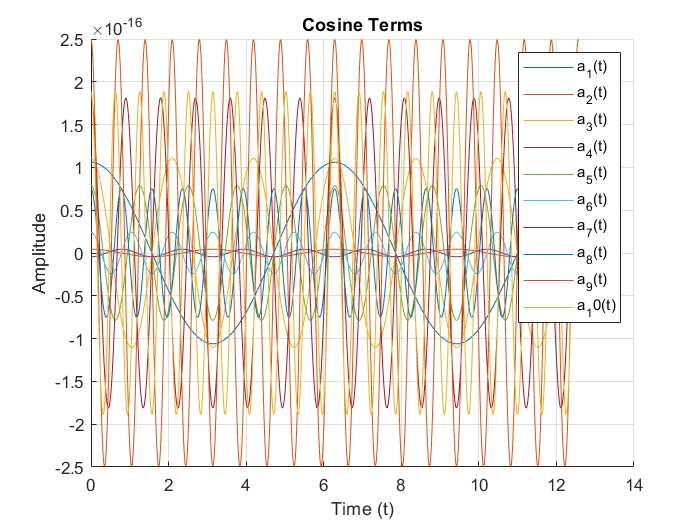This space is for a detailed description of the second answer, including any insights or explanations related to your solution.
Download 7a.mb)
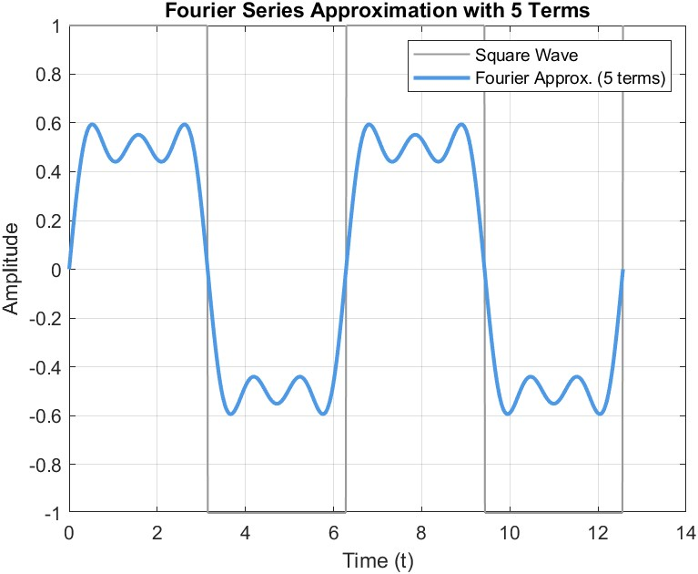 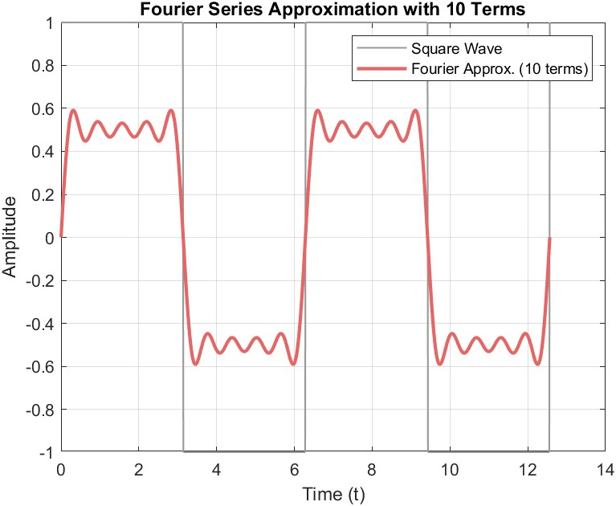 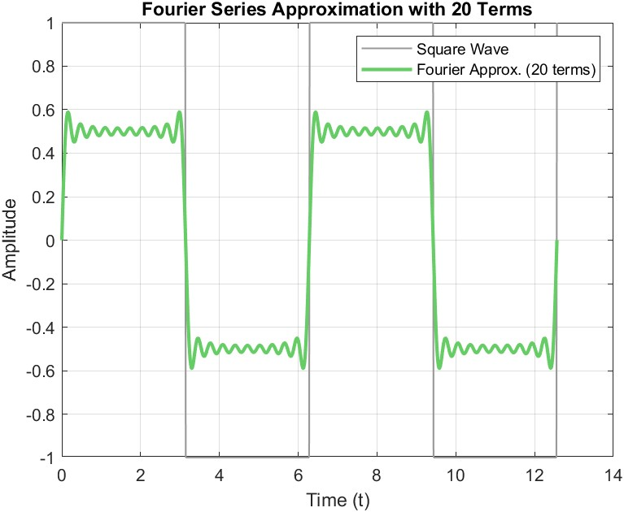Question 8:
A periodic sawtooth wave is defined by:
x(t) = t / π, −π ≤ t < π
This signal repeats with a period T = 2π.
(a) Derive the Fourier series coefficients for the sawtooth wave.
(b) Using MATLAB, plot the original sawtooth wave and its Fourier series approximations using 5, 10, and 20 terms.
(c) Comment on the accuracy of the approximation and explain why the Gibbs phenomenon occurs at discontinuities.
(d) Analyze the impact of the number of harmonics on the quality of the approximation.
Answer 8:
b
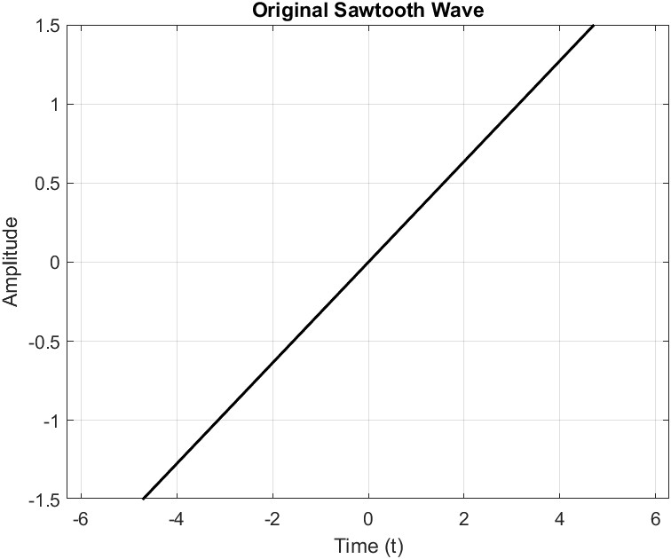 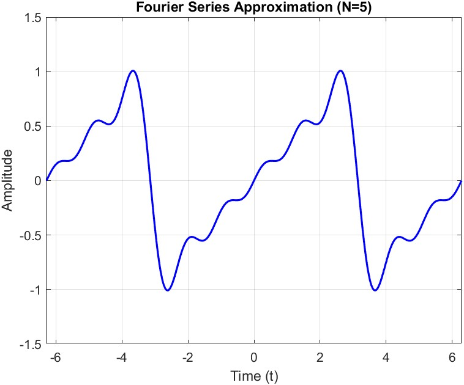 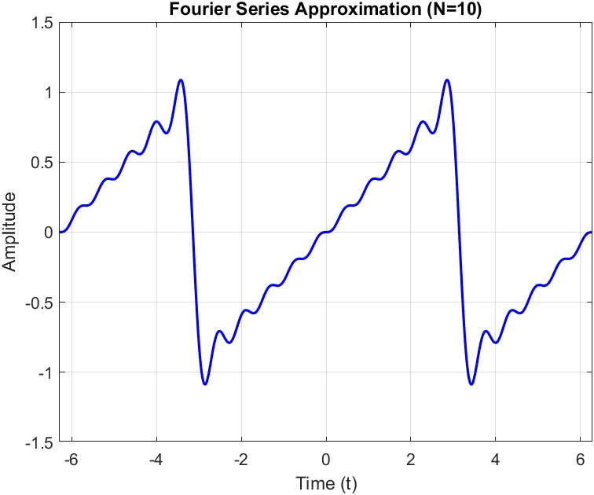 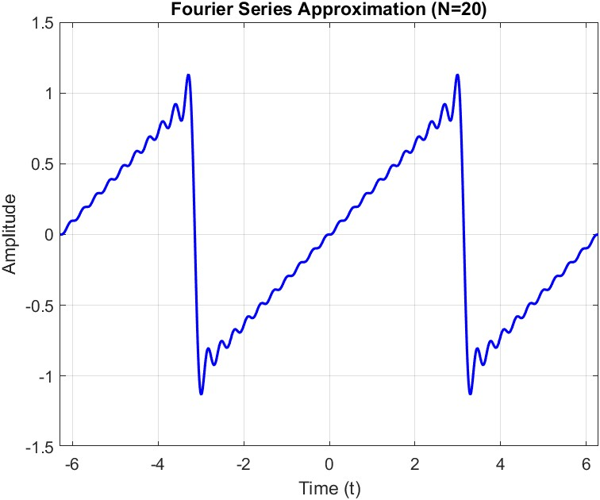The simulation file is given below
Download q8b.mQuestion 9:
A triangular wave x(t) has period T = 2π and is defined as:
x(t) = {
t / π, 0 ≤ t ≤ π
−t / π + 2, π ≤ t ≤ 2π
}
(a) Compute the Fourier series coefficients for the triangular wave.
(b) Plot the triangular wave and its Fourier series approximations using MATLAB with 5, 10, and 20 terms.
(c) Discuss the symmetry properties of the triangular wave and their impact on the Fourier coefficients.
(d) Compare the rate of convergence of the Fourier series for the triangular wave with that of the square wave.
Answer 9:
b).
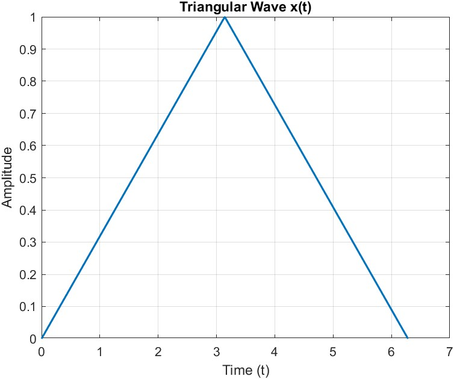 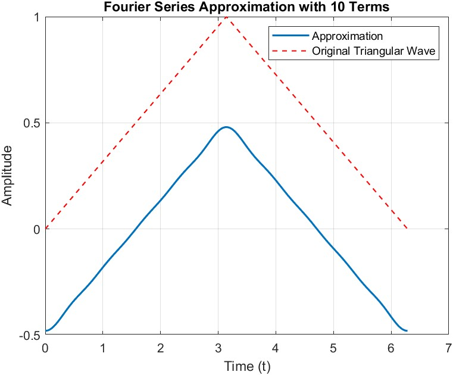The simulation file is below
Download 9bQuestion 10:
A half-wave rectified sine wave is defined by:
x(t) = {
sin(t), 0 ≤ t ≤ π
0, π < t ≤ 2π
}
(a) Derive the Fourier series coefficients for the half-wave rectified sine wave.
(b) Using MATLAB, plot the original signal and its Fourier series approximations for 5, 10, and 20 terms.
(c) Analyze the frequency spectrum of the signal and explain the presence of both sine and cosine terms in the Fourier series.
(d) Comment on the physical interpretation of the Fourier coefficients.
Answer 10:
b).
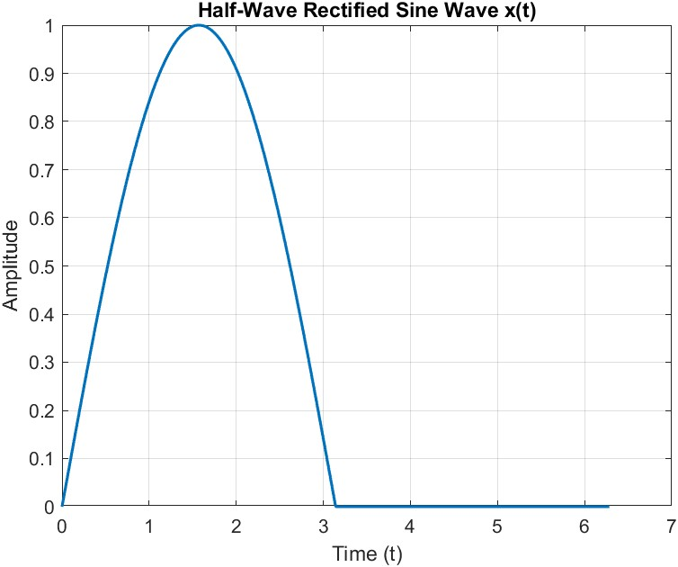 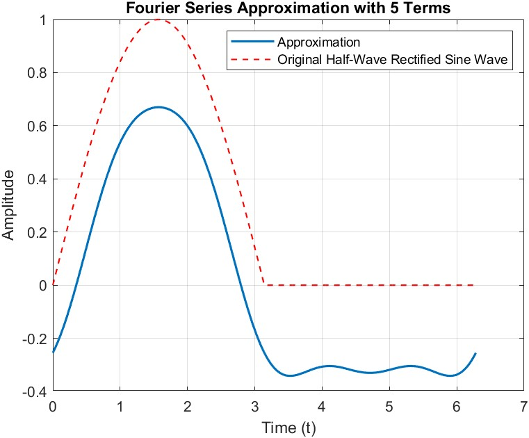 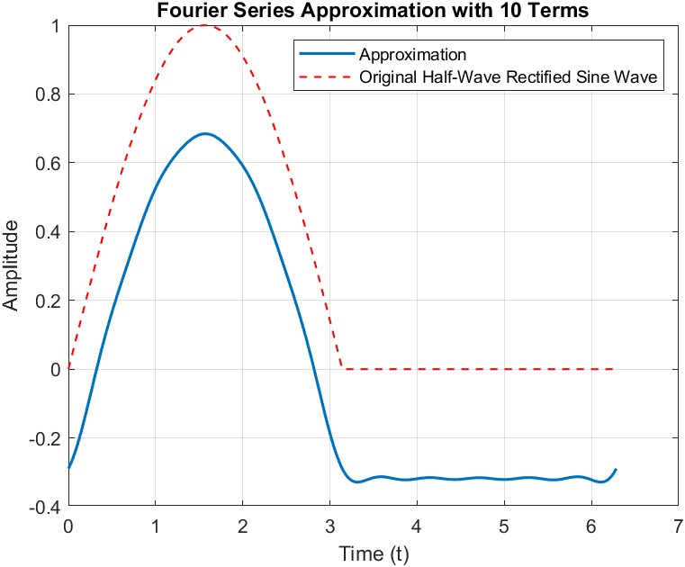The simulation file is below
Download 10bQuestion 11:
A system is described by the following second-order differential equation:
d2y(t)/dt2 + 4 dy(t)/dt + 8y(t) = 5u(t)
where u(t) is the input, and y(t) is the output.
(a) Derive the transfer function H(s) = Y(s) / U(s) for the system.
(b) Simulate the step response of the system using MATLAB.
(c) Plot the step response and determine if the system reaches a steady state.
Answer 11:
b)
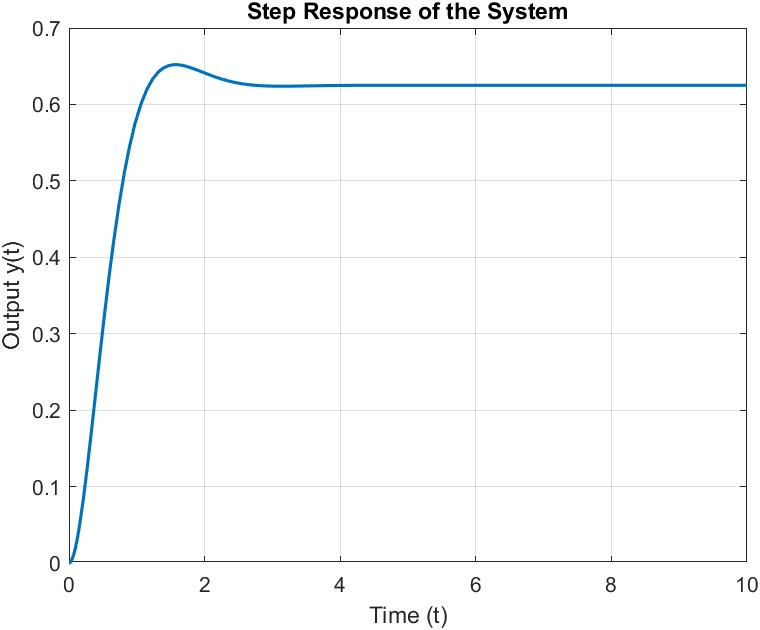The simulation file is given below
Download q11b.mQuestion 12:
A majority of modern trains and local transit vehicles utilize electric traction motors. The electric motor drive for a railway vehicle is shown in block diagram form in Figure 1, incorporating the necessary control of the velocity of the vehicle. After solving the differential equations and substituting system parameters we get 2.
Ignore the disturbance torque Td(s).
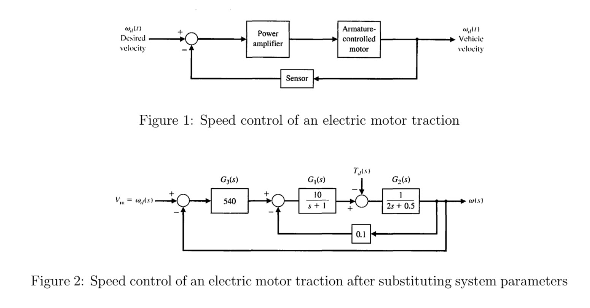(a) Find the overall transfer function of the system ω(s) / ωd(s).
(b) Implement the block diagram representation of the system shown in 2 in SIMULINK and find the overall transfer function.
(c) Simulate the step response and plot the figure.
Answer 12:
b)
Download q12b.mc)
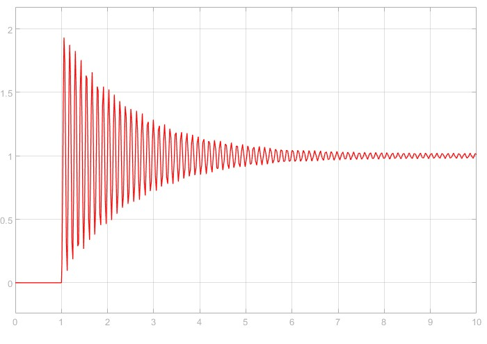The simulation file is given below
Download q12c.mQuestion 13:
Given the transfer function of a system:
H(s) = 10(s + 1) / (s2 + 6s + 10)
(a) Find the poles and zeros of the system.
(b) Plot the pole-zero map in MATLAB.
(c) Discuss the stability of the system based on the pole locations.
Answer 13:
b)
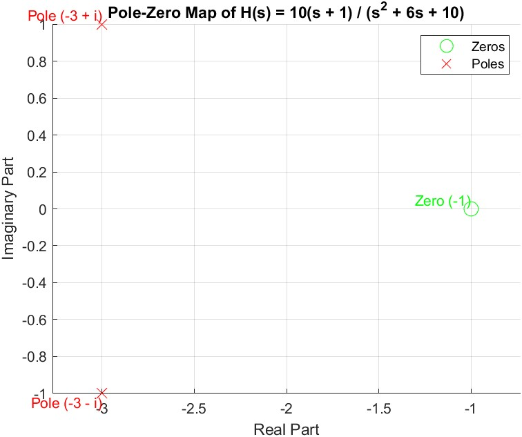The simulation file is given below
Download q13b.mQuestion 14:
Consider the following transfer function:
H(s) = 7 / (s2 + 3s + 2)
(a) Find the poles of the system.
(b) Simulate the impulse response of the system.
(c) Plot the impulse response and analyze if the system is stable based on the response.
Answer 14:
b)
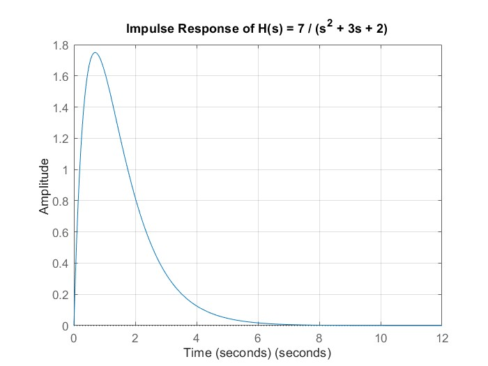The simulation file is given below
Download q14b.mQuestion 15:
Given a system with the transfer function:
H(s) = (s + 1) / (s2 + 4s + 4)
(a) Find the poles and zeros of the system.
(b) Plot the step response of the system.
(c) Generate the pole-zero map and comment on the system’s stability.
Answer 15:
b)
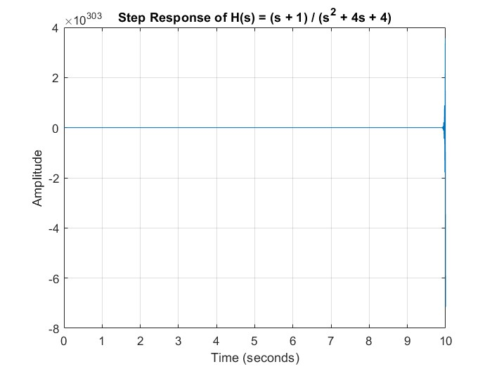The simulation file is given below
Download q15b.m